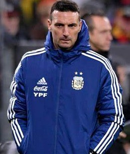
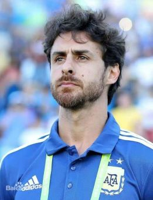
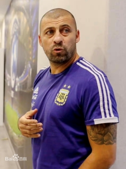

|  |
利昂内尔·斯卡洛尼（Lionel Scaloni），全名利昂内尔·塞瓦斯蒂安·斯卡洛尼（Lionel Sebastián Scaloni），1978年5月16日出生于阿根廷罗萨里奥，阿根廷足球运动员，司职右后卫，现任阿根廷国家男子足球队主教练。 利昂内尔·斯卡洛尼出道于阿根廷纽维尔老男孩，1997年，斯卡洛尼随阿根廷青年队赢得世青赛冠军。1998年登陆西甲拉科鲁尼亚，在这里达到运动生涯巅峰，效力九个赛季后失去主力位置，辗转西汉姆联、桑坦德竞技、马略卡和拉齐奥。2006年，斯卡洛尼代表阿根廷国家队征战2006年德国世界杯。 退役之后，斯卡洛尼于2019年7月正式成为阿根廷国家队的主教练。2021年，斯卡洛尼率领阿根廷国家队夺得2021年美洲杯冠军。2022年，斯卡洛尼率领阿根廷国家队夺得2022年卡塔尔世界杯冠军。 [7] [15] 北京时间2023年2月28日凌晨，官方宣布斯卡洛尼击败瓜迪奥拉和安切洛蒂，当选FIFA年度最佳教练。同日，阿根廷足协宣布与斯卡洛尼续约至2026年。 |
||
|
巴勃罗·艾马尔（Pablo Aimar），全名巴勃罗·塞萨尔·艾马尔·吉奥尔达诺（Pablo César Aimar Giordano），1979年11月3日生于阿根廷科尔多瓦省里奥夸尔托，阿根廷前男子职业足球运动员、教练员，球员时代司职前腰，绰号“小丑”（El Payaso），现任阿根廷国家男子足球队助理教练。 艾马尔出自阿根廷河床竞技足球俱乐部青年队。1996年，艾尔玛升入河床一线队开始职业生涯，之后效力于瓦伦西亚足球俱乐部、皇家萨拉戈萨足球俱乐部、本菲卡足球俱乐部以及马来西亚的柔佛足球俱乐部。2015年1月，艾马尔回到河床竞技。艾马尔的职业生涯夺得过2次阿根廷春季联赛冠军、1次阿根廷秋季联赛冠军、2次西甲联赛冠军、1次欧洲联盟杯和欧洲超级杯冠军等多项荣誉。2015年7月15日，艾马尔宣布退役。 1997年，艾马尔代表阿根廷U-20青年队夺得国际足联U-20世界杯冠军。1999年，艾马尔首次入选阿根廷国家男子足球队，之后代表阿根廷国家队出场52次，打进8球，出战两届世界杯和两届美洲杯。 2017年7月，艾马尔出任阿根廷U-17国家男子足球队主教练。2018年8月，艾马尔成为阿根廷国家队助理教练。2022年，艾马尔随阿根廷国家队夺得2022年卡塔尔世界杯冠军。
|
 | ||
|  |
瓦尔特·萨穆埃尔（Walter Samuel），1978年3月22日出生于阿根廷，阿根廷职业足球运动员，场上司职后卫，绰号“岩石”（The Wall）， [4] 现任阿根廷国家队助理教练。 俱乐部方面，萨穆埃尔曾先后效力于巴塞尔足球俱乐部、纽维尔老男孩足球俱乐部、博卡青年足球俱乐部、罗马足球俱乐部、皇家马德里足球俱乐部以及国际米兰足球俱乐部等球队。在转会罗马前，萨穆埃尔参加过71场阿根廷甲级联赛，并且攻入6球 国家队方面，萨穆埃尔共代表阿根廷国家队出场57次，进5球。 2015年10月17日，萨穆埃尔宣布将在2015-2016赛季结束后退役。 [2] 2016年5月26日，萨穆埃尔正式宣布退役。 [3] 退役之后，萨穆埃尔成为阿根廷国家队助理教练。 [14] 2022年，萨穆埃尔随阿根廷国家队夺得2022年卡塔尔世界杯冠军。 |
||